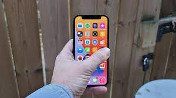

A smartphone is a portable device that combines mobile telephone and computing functions into one unit. They are distinguished from feature phones by their stronger hardware capabilities and extensive mobile operating systems, which facilitate wider software, internet (including web browsing over mobile broadband), and multimedia functionality (including music, video, cameras, and gaming), alongside core phone functions such as voice calls and text messaging. Smartphones typically contain a number of metal–oxide–semiconductor (MOS) integrated circuit (IC) chips, include various sensors that can be leveraged by pre-included and third-party software (such as a magnetometer, proximity sensors, barometer, gyroscope, accelerometer and more), and support wireless communications protocols (such as Bluetooth, Wi-Fi, or satellite navigation). Early smartphones were marketed primarily towards the enterprise market, attempting to bridge the functionality of standalone personal digital assistant (PDA) devices with support for cellular telephony, but were limited by their bulky form, short battery life, slow analog cellular networks, and the immaturity of wireless data services. These issues were eventually resolved with the exponential scaling and miniaturization of MOS transistors down to sub-micron levels (Moore's law), the improved lithium-ion battery, faster digital mobile data networks (Edholm's law), and more mature software platforms that allowed mobile device ecosystems to develop independently of data providers.

In the 2000s, NTT DoCoMo's i-mode platform, BlackBerry, Nokia's Symbian platform, and Windows Mobile began to gain market traction, with models often featuring QWERTY keyboards or resistive touchscreen input, and emphasizing access to push email and wireless internet. Following the rising popularity of the iPhone in the late 2000s, the majority of smartphones have featured thin, slate-like form factors, with large, capacitive screens with support for multi-touch gestures rather than physical keyboards, and offer the ability for users to download or purchase additional applications from a centralized store, and use cloud storage and synchronization, virtual assistants, as well as mobile payment services. Smartphones have largely replaced PDAs and handheld/palm-sized PCs.
Improved hardware and faster wireless communication (due to standards such as LTE) have bolstered the growth of the smartphone industry. In the third quarter of 2012, one billion smartphones were in use worldwide.[1] Global smartphone sales surpassed the sales figures for feature phones in early 2013.[2]
The development of the smartphone was enabled by several key technological advances. The exponential scaling and miniaturization of MOSFETs (MOS transistors) down to sub-micron levels during the 1990s–2000s (as predicted by Moore's law) made it possible to build portable smart devices such as smartphones,[3][4][5] as well as enabling the transition from analog to faster digital wireless mobile networks (leading to Edholm's law).[6][7][8] Other important enabling factors include the lithium-ion battery, an indispensable energy source enabling long battery life,[9] invented in the 1980s[10] and commercialized in 1991,[11] and the development of more mature software platforms that allowed mobile device ecosystems to develop independently of data providers.